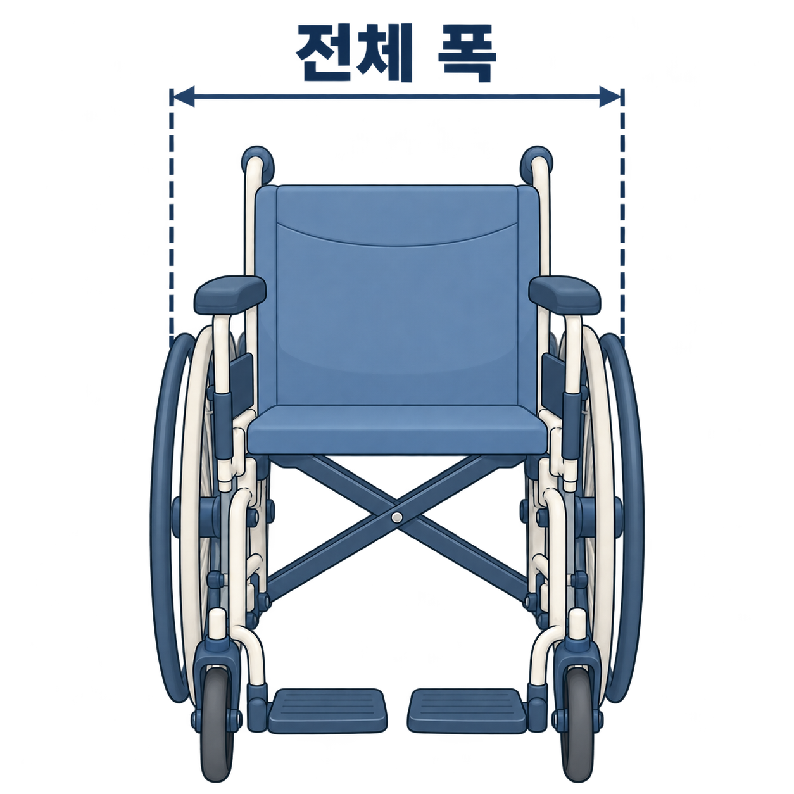
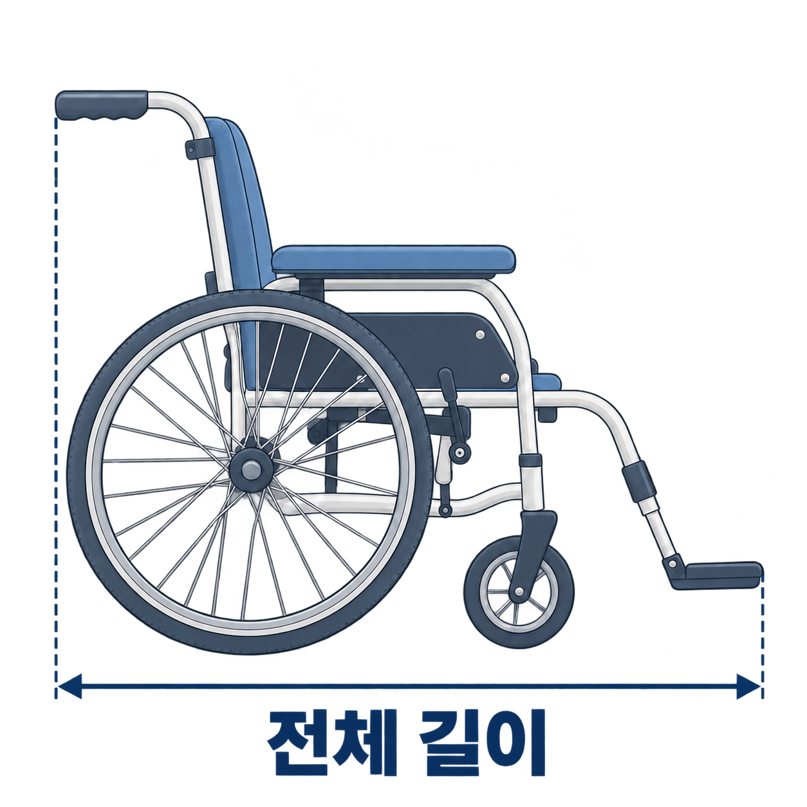

라벨을 찍어 휠체어 정보 찾기
제품 정보 스티커(제조사·모델명·바코드)를 찍으면 모델을 찾아볼게요.
사진은 모델을 찾는 데만 써요. 탑승 가능 여부를 판정하지 않아요.
제품 정보 스티커(제조사·모델명·바코드)를 찍으면 모델을 찾아볼게요.
사진은 모델을 찾는 데만 써요. 탑승 가능 여부를 판정하지 않아요.
읽는 중…
찍은 사진은 모델을 찾는 데만 써요
라벨이 없거나 찍기 어려워요 ›라벨에서 읽은 제조사·모델명이에요. 사진과 비교해 확인해 주세요.

A사 B500 · 전동 휠체어
폭 620 · 길이 1,110 · 높이 980mm (제조사 자료)
제조사 규격을 불러왔어요 · 실제 기기와 다를 수 있어요
찾은 모델 정보는 배차 시 참고해요. 실제 쓰는 기기의 크기가 확정되는 건 아니에요.
검색 결과는 참고용이에요. 다음 화면에서 실제 기기와 같은지 확인해요.
휠체어 전체 사진으로 찾은 후보예요. 라벨이나 설명서와 비교해 확인해 주세요.
사진으로 찾은 후보는 참고용이에요. 다음 화면에서 실제 기기와 같은지 확인해요.
라벨에서 모델을 찾지 못했어요
글자가 흐리거나 모델명이 없는 라벨일 수 있어요. 다른 방법으로 찾아볼게요.
모델 정보는 나중에 등록해도 돼요
지금은 모델 없이 등록을 이어가요. 접수할 때는 "규격 미확인"으로 전달되고, 내 정보에서 언제든 다시 찾을 수 있어요.
제품 설명서나 라벨의 값을 적어도 되고, 직접 잰 값도 돼요. 단위는 mm예요.


서울 UD택시 이용 기준: 폭 670 · 길이 1,180 · 높이 1,300mm 이내 (서울시설공단 안내)
숫자만 입력하면 돼요. 말로 입력하면 폭·길이에 나눠서 넣어드리고, 고칠 수 있어요.
값이 맞다면 이 UD택시로는 자동배차하지 않고, 호출 전에 이용 가능한 방법을 안내해요.